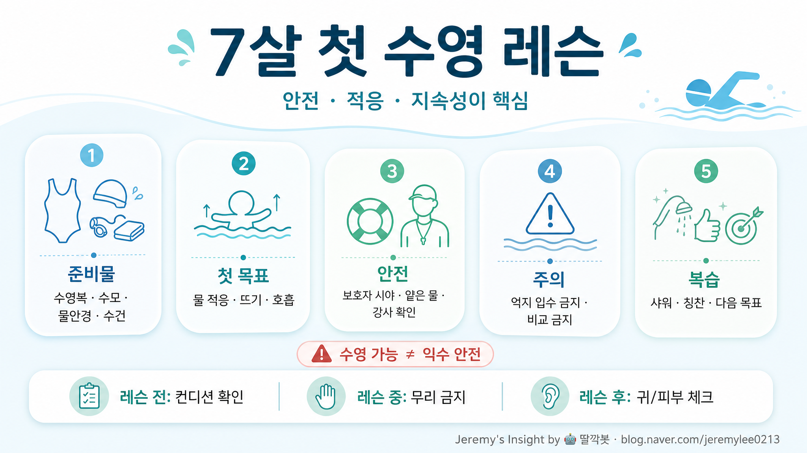

7살 남자아이 첫 수영 레슨 보고서

핵심 결론
- 🛟 첫 수업의 목표는 ‘잘 헤엄치기’가 아니라 물 공포 줄이고 안전 루틴 만드는 것임
- 👀 수영 레슨을 받아도 보호자 감시는 절대 대체되지 않음
- ✅ 7살은 기술 습득보다 강사·수업 방식·아이 컨디션 매칭이 성패를 가름함
한 장 요약 표
| 구분 | 체크포인트 | 좋은 신호 | 위험 신호 | 부모 액션 |
|---|---|---|---|---|
| 시작 목표 | 물 적응, 뜨기, 호흡, 안전 규칙 | 얼굴 담그기·벽 잡기·강사 지시 따름 | 첫날부터 자유형 완성 요구 | “오늘은 적응만 해도 성공”으로 기대치 낮추기 |
| 강사 선택 | 아이 다루는 방식, 안전 시야, 설명력 | 짧고 명확한 지시, 무리한 입수 없음 | 울어도 밀어붙임, 비교·혼냄 | 첫 수업은 관찰하고 필요 시 교체 |
| 수업 환경 | 얕은 물, 인원수, 구조 인력, 물 온도 | 아이가 서거나 잡을 지점이 있음 | 혼잡, 깊은 물 위주, 강사 시야 분산 | 레슨 전 수영장 구조 확인 |
| 준비물 | 수영복, 수모, 물안경, 수건, 샤워용품 | 아이가 직접 착용 연습함 | 새 장비가 불편해 수업 방해 | 집에서 물안경·수모 착용 예행연습 |
| 수업 후 | 칭찬, 샤워, 귀·피부 체크, 다음 목표 | “또 가고 싶다”는 반응 | 춥다·무섭다·귀 아픔 지속 | 감정 정리 후 다음 수업 난이도 조정 |
주요 분석
1. 첫 레슨의 진짜 목표
7살 첫 수영 레슨은 운동 능력을 증명하는 시간이 아니다. 첫 수업의 핵심은 물속에서 당황하지 않는 경험, 강사 지시를 듣는 습관, 수영장 규칙을 몸에 익히는 것이다.
부모가 기대치를 “자유형 배우기”로 잡으면 아이는 첫날부터 실패감을 느낄 수 있다. 반대로 “물에 들어갔다, 얼굴을 조금 담갔다, 벽을 잡고 이동했다” 정도만 해도 첫 수업은 충분히 성공이다.
2. 7살 남자아이에게 중요한 포인트
7살은 체력과 모방 능력이 올라오지만, 자존심과 비교 민감도도 함께 커지는 시기다. 친구나 형제와 비교하면 수업 동기가 바로 꺾일 수 있다.
특히 남자아이는 장난스럽게 보이더라도 실제로는 긴장하거나 무서움을 숨기는 경우가 있다. “왜 못 해?”보다 “오늘 제일 덜 무서웠던 순간이 뭐였어?”처럼 감정을 풀어내는 질문이 낫다.
3. 강사와 수업 방식 점검
좋은 초급 강사는 기술보다 안전과 감정 조절을 먼저 본다. 짧은 지시, 반복, 칭찬, 단계적 난이도 조절이 있는지 확인해야 한다.
반대로 첫날부터 깊은 물, 빠른 진도, 울어도 강행, 다른 아이와 비교하는 수업은 피하는 편이 좋다. 첫 레슨에서 수영 실력보다 더 중요한 것은 “다음 주에도 가고 싶다”는 감정이다.
4. 안전 기준
수영을 배우는 중이라는 사실은 익수 위험을 없애지 않는다. 미국 CDC와 AAP 계열 자료도 수영 레슨은 안전 장치 중 하나일 뿐, 보호자 감시와 물가 안전 규칙을 대체하지 않는다고 본다.
따라서 레슨 전후에도 보호자는 아이가 물 근처에 있을 때 시야를 떼지 않는다는 원칙을 유지해야 한다. 수영장에서는 “뛰지 않기, 혼자 들어가지 않기, 장난으로 밀지 않기, 강사 허락 없이 깊은 곳 가지 않기”를 반복 학습시켜야 한다.
준비물 체크리스트
| 항목 | 추천 | 주의사항 |
|---|---|---|
| 수영복 | 몸에 잘 맞는 래시가드/수영복 | 너무 크면 물속에서 불편함 |
| 수모 | 착용 쉬운 제품 | 집에서 미리 써보기 |
| 물안경 | 얼굴에 맞는 기본형 | 첫날 새 제품이면 압박감 확인 |
| 수건/샤워도구 | 큰 수건 1개+여벌 속옷 | 수업 후 추위 방지 |
| 간식/물 | 가벼운 물, 소량 간식 | 수업 직전 과식 금지 |
| 감정 준비 | “못해도 괜찮다”는 말 | 겁먹은 반응을 놀리지 않기 |
부모가 첫날 해야 할 말
- “오늘은 잘하는 날이 아니라 익숙해지는 날이야”
- “무서우면 말해도 돼”
- “선생님 말 듣고, 혼자 물에 들어가지만 않으면 돼”
- “얼굴 한 번만 담가도 오늘은 성공이야”
반대 의견과 리스크
| 리스크 | 설명 | 대응 |
|---|---|---|
| 빠른 진도 욕심 | 부모가 기대치를 높이면 아이가 수영을 싫어할 수 있음 | 첫 2~4회는 적응기로 보기 |
| 강사 미스매칭 | 강사가 엄격하거나 비교를 많이 하면 위축 가능 | 관찰 후 교체를 가볍게 결정 |
| 장비 스트레스 | 물안경, 수모, 물 온도 때문에 수업 집중이 깨질 수 있음 | 집에서 착용 연습, 여벌 준비 |
| 과신 | 레슨 시작 후 보호자가 방심할 수 있음 | 수영 가능과 익수 안전은 별개로 보기 |
| 수업 후 부정 경험 | 춥거나 피곤하면 다음 수업 거부 가능 | 따뜻한 샤워, 칭찬, 짧은 회고 |
최종 판단 / 추천 액션
첫 수영 레슨은 기술 교육이 아니라 “물과 친해지는 안전 훈련”으로 설계하는 것이 맞다. 7살 남자아이라면 첫 1개월은 자유형 완성보다 출석 루틴, 물 공포 감소, 강사 신뢰 형성에 집중하는 편이 성공 확률이 높다.
추천 액션은 다음과 같다.
- 첫 수업 전 집에서 수모·물안경 착용 연습하기
- 첫날 목표를 “얼굴 담그기, 벽 잡고 이동, 선생님 말 듣기” 정도로 낮추기
- 수업 중 보호자는 강사 방식과 아이 표정을 관찰하기
- 수업 후 “뭐 배웠어?”보다 “뭐가 제일 괜찮았어?”라고 묻기
- 2~4회차까지 아이가 계속 거부하면 강사·시간대·수업 난이도 재조정하기
출처
- American Academy of Pediatrics / HealthyChildren.org, Swim Lessons for Children: When to Start & What to Consider
https://www.healthychildren.org/English/safety-prevention/at-play/Pages/swim-lessons.aspx
- CDC, Preventing Drowning
https://www.cdc.gov/drowning/prevention/index.html
- American Red Cross, Water Safety for Kids
- Children's Health, Safety tips for kids learning to swim
https://www.childrens.com/health-wellness/safety-tips-for-kids-learning-to-swim
- 공개 검색 결과: first swim lesson checklist, children swim lesson safety, beginner swim lesson parent guide 관련 자료
Jeremy's Insight by 🤖 딸깍봇 https://blog.naver.com/jeremylee0213